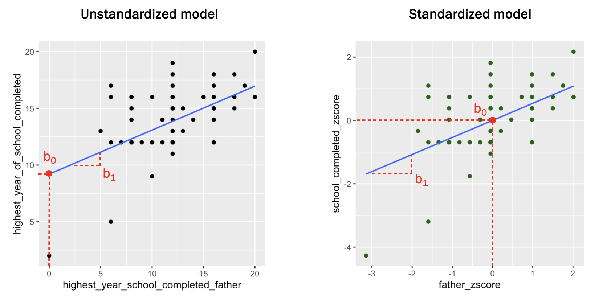
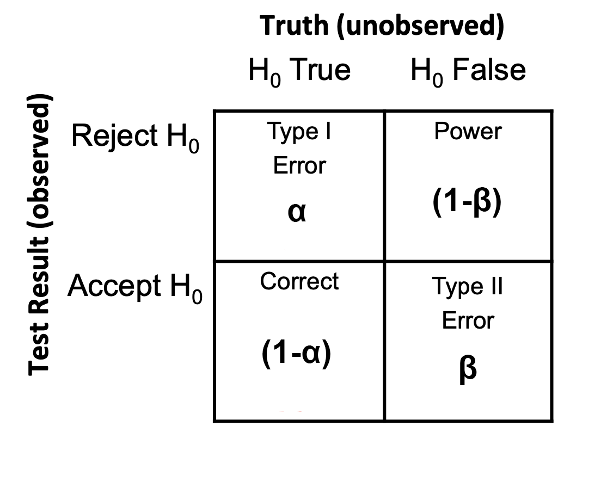
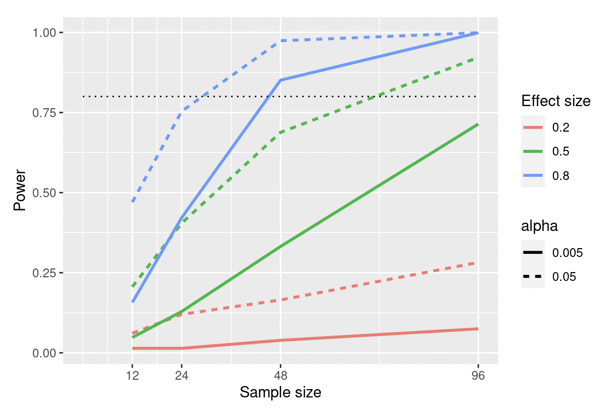

Previous: Chapter 17 - Significance Testing Whole Models
# Run this first so it's ready by the time you need it
install.packages("dplyr")
install.packages("ggformula")
library(dplyr)
library(ggformula)
GSS <- read.csv("https://raw.githubusercontent.com/smburns47/Psyc158/main/GSS.csv")
#smaller dataset, more similar in size to most psychology studies
set.seed(10)
GSS_subset <- slice_sample(GSS, n=100)
Chapter 18 - Effect Sizes & Statistical Power#
In the previous chapters we discussed how we can use data to test hypotheses. This approach gives us p-values, which we can use to decide if we think it is likely or not that the true effect or model in a population is 0. But that sort of decision is ultimately a binary answer: we either reject or fail to reject the null hypothesis. We neglect a lot of the information a model gives us if p-values are the only thing we pay attention to.
Consider the following situation. You are testing the efficacy of a new drug for treating depression, and find that the effect of the drug has a p-value of <0.01. Taking the drug significantly improves depression! In a simple world, that would be all you need to send the drug into production and start selling it to people. However, we don’t live in a simple world. It takes money and time to produce medicine, which are resources taken away from producing other things. Your bosses (and the taxpayers funding Medicare) want that money and time to be worth it.
Of course it’s worth it you say, because the effect is significant! But what if you learned that the actual amount the drug improved depression by was 1 point on a 10 point scale? Is that worth it? What if it instead improved depression by only 0.1 points? What if it improved depression by only a little bit, and also came with side effects like acne and stomach upset? Would you make the same drug production decision across all of these scenarios?
We know from our practice with p-values that even tiny effects can be significant if we have enough data. If your only goal is to publish a paper saying that an effect probably exists, then a p-value is enough for that purpose. But if you care about applying your new knowledge in the real world, a p-value doesn’t tell us everything. We don’t know if the effect size is large enough to matter. So while null hypothesis testing tells us whether an effect likely exists in some way (statistical significance), effect sizes tell us how meaningful that effect is (called practical significance). Good statistical analyses should report both p-values and effect sizes in order to give the full picture about a statistical model.
18.1 Unstandardized effect sizes#
How do you measure an effect size? Actually, throughout this course we’ve already been doing it! An effect size is any number expressing the magnitude of an effect. When fitting models, we have interpreted the b coefficients estimated by those models in the context of what difference in predictions we would make for different values of input variables. For a b coefficient of 5, we’d change our prediction of an outcome variable by 5 units for every one unit increase in the predictor variable. Thus, the predictor’s value has a big impact on what our outcome predictions are. For a b coefficient of 0.1, we’d change our outcome prediction only a little bit. The predictor has a smaller impact on predictions. These numbers are all effect sizes. They express the size of the effect a predictor variable has on the predictions of an outcome variable.
Likewise, RMSE is an effect size because it tells us the magnitude of prediction errors to expect when using a whole model.
The b coefficients and RMSE are specifically known as unstandardized effect sizes. An unstandardized effect size is the magnitude of an effect expressed in the units of the variables.
Unstandardized effect sizes are useful for making decisions about particular situations. Drug dose, cholesterol, height, etc. all having meaningful units by which their quantity is expressed. An unstandardized effect size representing a number in these units tells you how much of a drug you have to give to get an expected outcome, and amount of cholesterol in the blood is well-mapped to heart risks. We interact with the world through the units of quantities, and we best understand effects in these same units.
However, we have less understanding about units in domains that we’re not already familiar with or that are abstract concepts. E.g., if a model suggested that drinking alcohol before bed is associated with a decrease in sleep length of 2 hours, we intuitively know what that means. We all sleep, and we’ve all felt the effects of 8 hours versus 6 hours of sleep. But if that model instead suggested that drinking alcohol before bed is associated with a 2 point decrease in cognitive fluency, what does that mean? What concrete things define cognitive fluency? What does fluency = 5 feel like compared to fluency = 7?
Unstandardized coefficients are useful for understanding the practical significance of effects in units that we know about, but are less useful for abstract measurements or domains we are unfamiliar with. In that case, we can standardize the effect size.
18.2 Standardized effect sizes#
Standardized effect sizes remove the real-world units from variables. We’ve done a version of this already when learning about z-scores. A standardized variable is one that has been converted to z-scores. Z-scores, to review, express the value of a variable in terms of how many standard deviations it is away from the variable mean. By doing this, we don’t need to have domain expertise in the variable to intrinsically understand what certain values mean. Could you say what a temperature of 350F means relative to other typical temperatures for baking? What about a Gas mark of 5? You’re likely more familiar with the former than the latter. But if we convert each to z-scores and find that both have a z-score of -1, we can easily undertand either of those values relative to their distribution.
A standardized effect size operates similarly. You don’t need to know about a variable’s units to understand the magnitude of a standardized effect size. Doing this has three benefits for understanding statistical models:
Standardized effect sizes help you evaluate how big or small an effect is when the units of measurement aren’t intuitive. We don’t have to know the typical range or mean of a variable already in order to interpret a standardized effect size - its value has all the information wrapped into it.
Standardized effect sizes can help you compare results across studies. Many variables are measured on different scales in different studies. This isn’t likely to happen with a variable like temperature, but there are multiple anxiety scales to choose from, each of which is on a different scale. Including standardized effect size statistics can help readers understand trends or differences across studies. It can also help us compare effect sizes of variables in the same model that are measured in different units (although remember we need to use hypothesis testing to figure out if a difference in estimated effect is statistically significant).
Standardized effect sizes let us plan our research more easily. We’ll cover this process more later in this chapter, but the short of it is that there are tools we can use to figure out what sample size we should collect if we want to be able to find a particular effect size as statistically significant. These tools use standardized effect sizes.
Next we will cover how to calculate some of the most common standardized effect statistics.
Standardized model coefficient#
An unstandardized model coefficient is the coefficient estimate a model gives when the model is fit directly onto raw variable values. It is interpreted in the context of those variable units.
unstandardized_model <- lm(highest_year_of_school_completed ~ highest_year_school_completed_father,
data=GSS_subset)
summary(unstandardized_model)
When fitting this model, we get a \(b_0\) estimate of 9.2 and a \(b_1\) estimate of 0.388. These mean, in the context of the variable units, that we expect someone to have 9.2 years of education if their father had 0 years of schooling. For every one additional year of school their father had, we’d expect the respondent’s education to be higher by 0.388 years.
A standardized model coefficient, in contrast, is the estimate a model gives when those variables have been z-scored first. The code below will pick out the relevant variables for our model and z-score them all at the same time.
GSS_zscore <- select(GSS_subset, highest_year_of_school_completed, highest_year_school_completed_father) %>%
na.omit(.) %>% #removes rows with any NAs
scale(.) %>%
as.data.frame(.)
standardized_model <- lm(highest_year_of_school_completed ~ highest_year_school_completed_father, data=GSS_zscore)
summary(standardized_model)
These b estimates are different than before. Now, \(b_0\) is basically 0 and \(b_1 = 0.538\). This is because these coefficients are now in the context of z-scores instead of years of education. We’d interpret these as expecting someone to have an education level that is the mean (z = 0) if their father had a mean amount of education (z = 0). This makes sense, because a regression line always runs through the mean of both the predictor and outcome variable. We’d also expect that education level to increase by 0.538 SDs for every 1 SD increase in father’s education, according to the value of the standardized \(b_1\).
Also notice the difference in p-values between these models. The unstandardized \(b_0\) is significant (p = 2.40e-15), but the standardized \(b_0\) is not (p = 1). This is because the null hypothesis is that \(\beta_0 = 0\) for both models. In the unstandardized model, 9.2 is a number that is way above 0, and is thus unlikely to be produced by a population unstandardized-\(\beta_0 = 0\) years. In the standardized model, standardized-\(\beta_0 = 0\) means unstandardized-\(\beta_0\) = the mean of of education. A z-score of approximately 0 isn’t different than 0 at all, so we fail to reject that null hypothesis.
However, the p-values of both \(b_1\) estimates are the same. This is because, regardless of the units, the strength of the effect is still the same. There’s no difference in the significance of effect coefficients between a standardized and unstandardized model. This is why you can choose to express the effect size of an estimate in either standardized or unstandardized terms.
Note that in order to find this standardized b estimate, we have to z-score BOTH the predictor and the outcome. If we only z-scored the predictor and not the outcome, the meaning of the b estimate would be “change in years of education for every 1 SD increase in father’s education.” It would be a sort of half-standardized effect estimate, but we want a fully standardized one in order to compare effect sizes between different analyses and studies.
When talking about standardized vs. unstandardized model coefficients, because they are different numeric values, make sure you are being explicit about which one you are using. Oftentimes in published research, unstandardized coefficients are reported as \(b\) and standardized coefficients are reported as \(\beta\) (that’s not to say they’re the same as population estimates, but you start running out of letters in the alphabet eventually…).
Correlation coefficient r#
In chapter 12 we learned about the correlation coefficient \(r\). It is frequently used to represent a standardized relationship strength between two continuous variables. It can range from -1 (perfect negative correlation) to 1 (perfect positive correlation), with 0 meaning no relationship.
\(r\) is the same thing as the standardized b coefficient from a simple linear model with just one predictor:
standardized_model$coefficients[[2]]
cor(GSS_subset$highest_year_of_school_completed, GSS_subset$highest_year_school_completed_father,
use="pairwise.complete.obs")
Note that if you have a multivariable model, the standardized b coefficients for each predictor are partial correlations, not the same thing as \(r\). They are the correlation with the outcome variable’s residuals after taking into account the effects of the other predictors.
R2#
While standardized \(b\) and correlation \(r\) speak to the relationship between an outcome variable and one predictor, \(R^2\) is a standardized effect size for how much variation an entire model explains. It tells us the proportional reduction in error of a full model compared to the null model, and its meaning is the same regardless of the units used for the variables in the model.
In the case of a one-variable model, it is actually the same thing as the square of the correlation coefficient:
cor(GSS_subset$highest_year_of_school_completed, GSS_subset$highest_year_school_completed_father,
use="pairwise.complete.obs")^2
summary(unstandardized_model)$r.squared
That’s where the name “\(R^2\)” comes from. But of course it can also be used to to account for the proportion of error explained by a model with more than one predictor.
Cohen’s d#
Standardized \(b\), \(r\), and \(R^2\) are all effect sizes that we have seen and used before. There are two more measures of effect size that are common to see in psychology research that we haven’t yet encountered.
One of them is called Cohen’s d. This measure was created by an influential quantitative psychologist named Jacob Cohen in the 1950s. It is used specifically to represent the magnitude of difference between two categorical groups independent of real-world units. Cohen’s \(d\) is related to the concept of z-score, in that it indicates the size of a group mean difference in standard deviation units. It is calculated as:
\(s_{pooled}\) is a weighted average of the standard deviations from both groups:
Cohen’s \(d\) can range between 0 and infinity, but in practice is rarely more than 2. The bigger the \(d\) value, the bigger an effect is. To find Cohen’s \(d\) in R, you can pass a group model formula and dataset argument to the cohens_d() function in the effectsize package as if you were fitting the model:
install.packages("effectsize")
library(effectsize)
born_in_US <- GSS_subset$highest_year_of_school_completed[GSS_subset$born_in_us == "Yes"]
born_outside_US <- GSS_subset$highest_year_of_school_completed[GSS_subset$born_in_us == "No"]
paste0('mean education born in US: ', mean(born_in_US, na.rm=TRUE))
paste0('mean education born outside US: ', mean(born_outside_US, na.rm=TRUE))
#effect size for difference in mean education for people born in or outside of US
# 0 = in, 1 = outside
cohens_d(highest_year_of_school_completed ~ born_in_us, data = GSS_subset)
This table tells you the standardized mean education difference between the two groups represented by born_in_us in the GSS data. The answer we get is -0.955, meaning the first group (X=0) has 0.955SD less education than the second group (X=1). Interpreting that in terms of our variable, people born outside of the US have less years of education on average than those born in the US.
The additional values tell us the confidence interval around this effect size, as it is only an estimate based on our data.
Cohen’s f2#
Cohen also came up with something very similar to \(R^2\), called Cohen’s \(f^2\) (not to be confused with an F value in an F distribution). Rather than describing the proportion of variation in an outcome that a model explains, Cohen’s \(f^2\) is the ratio of explained to unexplained error:
Sometimes people report is as just Cohen’s \(f\):
Rather than being bound between 0 and 1 as \(R^2\) is, \(f^2\) can be as small as 0 and theoretically as large as infinity. A bigger \(f^2\) means a model is explaining more variation. If \(f^2\) is above 1, then the model explains more variation than what is left unexplained. In psychology that is rare but not unheard of.
The above equation is known as the global \(f^2\), or the \(f^2\) score for a model compared to the null model. You can get \(f\) in the effectsize package by passing a model object to the cohens_f() function:
cohens_f(unstandardized_model)
#verifying that it is the same as sqrt(R2 / (1-R2))
sqrt(summary(unstandardized_model)$r.squared / (1 - summary(unstandardized_model)$r.squared))
There is also a local \(f^2\) that tells you the increase in explained variation between a full model and a non-null nested model. The equation for that is:
where \(R^2_{full}\) is the \(R^2\) of the model with all predictors in it, and \(R^2_{nested}\) is the \(R^2\) of a smaller nested model.
18.3 What is a good effect size?#
When evaluating an unstandardized effect size for units you are familiar with, you will already have a sense about what an “important” vs. “trivial” effect size is. If you’re studying for a test, 10 hours of studying making a difference of 1% on your grade might not be worth it, but a difference of 10% could be worth spending your whole Saturday in the library.
When you use a standardized effect size, the down side is that you don’t have any real-world units to ground this number in. But the up side is that the same standardized effect size can apply across many research studies. Over time, then, you begin to accumulate a sense for what value of a standardized effect size is “big”, “medium”, or “small.”
When Jacob Cohen first formulated his measurements of \(d\) and \(f^2\), he came up with rules of thumb for what counts as a small, medium, and large effect. He decided that, in general, a “large” effect is one that is obvious - people generally should be able to see this effect in the population, without the need to collect data. This translates to a Cohen’s \(d\) of >= 0.8. Something like the difference in height between men and women is a large effect because it is generally possible to see without systematic research, and also has a Cohen’s \(d\) > 0.8:
studentdata <- read.csv("https://raw.githubusercontent.com/smburns47/Psyc158/main/studentdata.csv")
female_height <- studentdata$Height[studentdata$Sex == "Female"]
male_height <- studentdata$Height[studentdata$Sex == "Male"]
paste0('mean female height: ', mean(female_height, na.rm=TRUE))
paste0('mean male height: ', mean(male_height, na.rm=TRUE))
#X=0 is female, X=1 is male
cohens_d(Height ~ Sex, data = studentdata)
Cohen set a “medium” effect to be one that is 0.5 < \(d\) < 0.8. A medium effect should be visible within a representative dataset “to the naked eye of a careful observer.” You might not obviously notice it in real life, but if you collect data and plot the histograms of two groups, you’d be able to see a difference in the histograms.
Finally, a “small” effect is 0.2 < \(d\) < 0.5. This is one that you can’t see with the naked eye, but that is still meaningful. It will still matter at the scale of an entire population. Cohen considered any \(d\) less than 0.2 to be trivial and not worth studying.
In his 1988 book “Statistical Power Analysis for the Behavioral Sciences”, Cohen also set some general rules of thumb for \(r\), \(R^2\), and \(f^2\):
Effect size |
small effect |
medium effect |
large effect |
|---|---|---|---|
\(d\) |
0.2 |
0.5 |
0.8 |
\(r\) |
0.1 |
0.3 |
0.5 |
\(R^2\) |
0.02 |
0.10 |
0.25 |
\(f^2\) / \(f\) |
0.02 / 0.14 |
0.15 / 0.39 |
0.35 / 0.59 |
However, in practice it is best to remember that these are just guidelines. A large effect might not be very trustworthy if you found it in a small sample, and a tiny effect might still be theoretically important (e.g., it’s not a great predictor on its own but significantly contributes to a larger model). It is better to be aware of the field of study you are working in, what the typical effect sizes are, and how your measured effect size compares to those. For instance, it is pretty rare to find large effects in psychology research (most of those have been published already!). A lot of modern work is on the little effects that give the data generation process nuance.
18.4 Statistical power#
Effect sizes and statistical significance are not the same thing - you can’t tell what an effect size is just from a p-value, and you can’t tell whether an effect is significant just by looking at an effect size. But these two things cooperate for helping us make conclusions about models.
Recall in chapter 16 when we discussed Type I and Type II error. Type I error is the chance that we mistakenly reject the null hypothesis when we shouldn’t. We thought that there’s a non-zero effect, but really there’s nothing there. We set this chance ourselves, with an \(\alpha\) criterion of 0.05. \(\alpha = 0.05\) means there is a 95% chance we don’t reject the null when it is true (P(fail to reject | \(H_0\) is true); true negative), and a 5% chance we incorrectly reject the null when it is true (P(reject | \(H_0\) is true); false positive). \(\alpha\) is the Type I error rate - given the null is true, how often do we get a false positive decision?
On the other hand is Type II error. This is the chance that we fail to reject the null hypothesis when we should have. Like Type I error is controlled by a criterion that we set, Type II also has a criterion \(\beta\) (not to be confused with the population model parameter \(\beta\) either… statisticians really love beta). When we set the \(\beta\) criterion to something like 0.05, we would have a 5% chance of failing to reject the null hypothesis when we should (P(fail to reject | \(H_0\) is false); false negative). The complement, then, is we have a 95% chance of correctly rejecting the null hypothesis when we should (P(reject | \(H_0\) is false); true positive)).
This concept, the chance of correctly finding an effect that exists in the population, is called statistical power. Statistical power, \(\alpha\), and \(\beta\) are all related, as we can see in this grid:
For any one study, Type I and Type II error are at odds - lowering the \(\alpha\) criterion to make it harder to get a false positive (rejecting the null when we shouldn’t) will raise the chance of getting a false negative (failing to reject the null when we should).
However, before even running a study, it is possible to keep both \(\alpha\) and \(\beta\) low. This is because statistical power (1-\(\beta\)) is related to both sample size and effect size. A larger sample size makes our estimates more accurate, and easier to find a small effect significant. A larger effect size is easier to find statistically significant. Thus, when we have a large sample size and a large effect size to find, our statistical power is high for a pre-determined Type I error rate.
We can verify this through simulation. Below is a simulated experiment, comparing the means of two groups. This simulation varied the size of the effect (specified in terms of Cohen’s \(d\)), the Type I error rate, and the sample size. This was repeated many times to find the proportion of times that the true effect was correctly identified as significant (statistical power).
This simulation shows us that for any Type I error rate we choose, we will have more statistical power if our sample size is large and the effect we are looking to estimate is large. Even if the effect size is small, we will have more power to correctly detect it if we use a big sample size and a more lenient Type I error rate.
There are at least two important reasons to care about statistical power. First, generally we can’t control how big an effect is in the population, but we can increase our chance of finding it by designing a study with a large sample size and high statistical power. If we run a study with low statistical power, it will be what is called underpowered and we have low hope of correctly finding a significant effect, even if it does exist in the population. Underpowered research is ultimately a waste of money.
Second, it turns out that any positive findings that come from an underpowered study are more likely to be false compared to a well-powered study. How can this be? Even if we run a study with a small sample size, if we find a significant effect, that would just mean the effect is a large one, right?
It’s counter-intuitive, but when a research field in general is made up of studies with low power, the chance that any one published study is a false positive is high. This is because it is harder for true positives to be found, but still possible to find false positives. We can use math to demonstrate this explicitly:
When we open up a research study reporting an effect, we want to know how likely the results in that study are to be a good reflection of reality - a true positive. We want the positive predictive value of any one research paper to be high:
This is the proportion of positive results that are true positives.
In a research field where many hypotheses are being tested, some are real effects and some are null. There is a probability that any one hypothesis is a true effect (\(P(effect)\)) or null (\(P(null effect)\)). The probability of finding a true positive result is simply \(P(effect)\) multiplied by the statistical power of the study:
where \(\beta\) is the Type II error rate. The probability of a false positive result is determined by \(P(null effect)\) (aka \(1 - P(effect)\)) and the false positive rate \(\alpha\);
The positive predictive value of any one published study is then:
Let’s say a research field is pushing the boundaries of knowledge, where most hypotheses that are tested are duds (e.g. \(P(effect) = 0.2\); though note that we don’t actually know this number in reality). If the researchers of this field are using a typical Type I error rate of 5% and high power (say, 95% power), we can compute the positive predictive value of any one publication as:
This means that any one published paper has an ~83% chance of being a true positive vs. a false positive.
But now let’s do the same for a research community that doesn’t use good power (say, 15% power):
Now, any one published study only has a ~43% chance of being a true positive. There are more false positive publications than true positives (and a very large file drawer of true and false negatives that never made it to publication).
This realization came crashing down on psychology in the early 2010’s when the Open Science Foundation published a replication report in which many research teams tried to replicate prior results in the field. Out of 100 unique effects tested, only 36% of them replicated (produced another significant result in a new data sample). This shocked members of the field and triggered a major crisis of faith, since many of these effects had dozens of earlier papers backing them up. The problem was because most psychology studies were underpowered, and it turns out research groups had been scrapping many experiments that didn’t show a significant result (termed the file-drawer problem). This means that, even for the papers that did find a significant effect, the positive predictive value of those papers was low - they were more likely to be false positives than true positives.
18.5 Power planning#
Low power is thus a one-two punch to a researcher’s efforts. It makes it harder to find an effect that is real in the population, and it also lowers the trustworthiness of results that make it to publication.
The solution to this is to ensure ahead of time that your study design will have enough power. This process is called power planning.
Recall that these four things are related to each other:
statistical power
sample size
Type I error rate
effect size
If you know three of these values, you can compute the fourth.
One version of power planning is called a power analysis. It asks, given a chosen Type I error rate and sample size, what power do you have to detect a minimum effect size of interest. Typically in psychology, we want at least 80% power.
A good tool for doing power planning is the pwr package in R. With it, you can enter three of the four values above, and it will tell you the fourth. Let’s use the pwr.r.test() function in that package for an analysis where we plan to find a correlation between two variables (a quantitative outcome and one quantitative predictor). This function has four arguments:
n, the planned sample sizer, the effect size \(r\)sig.level, the Type I error ratepower, the desired power level.
To use this function, three out of four of these arguments must be set with a value, and the fourth one assigned a value of NULL. Whichever value is set to NULL will be computed based on the other three.
If we use a Type I error rate of 5%, a sample size of 50, and think we are interested in a correlation effect size \(r = 0.4\), what percentage chance do we have to find that as significant?
install.packages("pwr")
library(pwr)
pwr.r.test(n=50, r=0.4, sig.level=0.05, power=NULL)
Installing package into '/Library/Frameworks/R.framework/Versions/4.3-arm64'
(as 'lib' is unspecified)
The downloaded binary packages are in
/var/folders/mg/1wy1xcls587_h0tqnj42l5740000gn/T//Rtmp4iDznH/downloaded_packages
approximate correlation power calculation (arctangh transformation)
n = 50
r = 0.4
sig.level = 0.05
power = 0.8339055
alternative = two.sided
The result of this power analysis says that, with a sample size of 50 and Type I error rate of 5%, we have 83% power to detect an effect as small as r=0.4. That’s good enough for us to trust that in running such a study, we could find that effect as significant if it exists. If the true effect in the population is smaller than that, or we had a smaller sample size, we would be underpowered to detect it.
Now use the pwr.r.test() function yourself to run a power analysis for a study with n=50, significance level 0.05, and correlation effect size 0.2. Are we well-powered or underpowered to find a small effect like this with such a study?
#Enter values into the arguments below
pwr.r.test(n=, r=, sig.level=, power=)
Another type of power planning we can do is sample size planning. If we want to be able to detect an \(r=0.2\) with 80% power, what sample size do we need to do that?
pwr.r.test(n=NULL, r=0.2, sig.level=0.05, power=0.8)
We would need at least 194 people in our research study in order to find an effect of \(r=0.2\) as significant (193.0867, but you can’t have partial people, so round up).
pwr has functions for different sorts of effect sizes. For instance, to find the sample size needed to detect a certain Cohen’s \(d\), use pwr.t.test() (a d score is the corresponding standardized effect for a traditional t-test). The arguments for this function are:
n, the planned sample sized, the effect size Cohen’s \(d\)sig.level, the Type I error ratepower, the desired power leveltype, an optional argument to set if you want the effect size for one-sample t-test (‘one.sample’), independent samples t-test (‘two.sample’), or a paired-samples t-test (we will cover this in chapter 20; ‘paired’). The default value is ‘two.sample’.
pwr.t.test(n = NULL, d = 0.2, sig.level = 0.05, power = 0.8, type = 'two.sample')
Pay attention to the note at the end of the output - we would need this sample size n for each group in the study in order to find d = 0.2 as significant. That’s a lot of people needed!
To plan for the sample size needed to detect a total model \(f^2\) score, use pwr.f2.test(). This one takes five arguments:
u, the number of predictors in the model (k-1)v, the degrees of freedom (N-k)f2, the effect size \(f^2\)sig.level, the Type I error ratepower, the desired power level.
What sample size do we need to detect an \(f^2\) score of 0.1 in a model with two predictors?
pwr.f2.test(u=2, v=NULL, f2=0.1, sig.level=0.05, power=0.8)
We would need at least 97 degrees of freedom in our study. Since we are estimating coefficients for 2 predictors (a three-parameter model), that means 97 + 3 = 100 people to recruit.
pwr doesn’t have a function for \(R^2\), but remember that \(f^2\) is computed from it. Therefor we can use these power planning tools with \(f^2\) and then reverse the equation to find \(R^2\):
In fact all these effect sizes can be converted into each other, since they’re all ultimately built on sum of squares. The website escal.site has a handy webapp for computing all these different effect sizes from the others (note that it uses Cohen’s \(f\) instead of \(f^2\)).
A big question for power planning is what sort of effect size should we plan for? This sort of question could be answered two ways. One, what is the smallest effect size that would matter to you? What do you consider to be a meaningful effect, and what would be too trivial to care about? This is called your smallest effect size of interest. You could use Cohen’s rules of thumb for this, or your own expertise in the research domain for what kind of effect size is worth the trouble of an intervention.
The second way to answer this is, what effect sizes have other researchers found in related studies? You might expect your effect size to be similar to theirs, so you can power plan with that sort of effect size in mind. Though beware, because of the file-drawer problem, the average of published effect sizes may be bigger than the true effect in the population.
If you don’t have an idea about a smallest effect size of interest and there isn’t a guide from prior research about what you should expect, you can run a pilot study to collect some data and estimate an effect size. A pilot study generally has few data points and thus unstable estimates, but here you’re not worried about a significant effect yet. You can find the confidence interval of an estimate in this pilot study, perhaps choose an effect value that is on the lower end of that interval, and then power plan for a full study with that effect size as a target.
Sometimes you might not have the luxury to collect a large sample size because you are constrained by resources such as funding or time. In that case, it’s good to run a power analysis to see what power you would have to find a certain effect size with your available sample size. Depending on the answer, you can decide if it is reasonable to expect you will find a significant effect or not, and thus maybe this study would be a waste of resources or not.
Chapter summary#
After reading this chapter, you should be able to:
Contrast statistical and practical significance
List examples of unstandardized effect sizes
List examples of standardized effect sizes
Compute the most common standardized effect sizes
Discuss what makes a good effect size
Define statistical power
Explain why statistical power is important
Run a power plan
New concepts#
effect size - the magnitude of influence a predictor has on the values of the outcome variable.
practical significance - the importance or usefulness of an effect in the real-world. An effect can be statistically significant, but not practically significant if it is really small.
unstandardized effect size - an effect size represented in the original units of the variables.
standardized effect size - an effect size represented in terms of standardized units (z-scores, proportion of error, etc.).
Cohen’s \(d\) - A standardized effect size that represents the magnitude of difference between two group means in terms of standard deviation units.
Cohen’s \(f^2\) - A standardized effect size that represents model performance through the ratio of explained to unexplained error.
global \(f^2\) - The increase in Cohen’s \(f^2\) for a model with predictors compared to the null model.
local \(f^2\) - The increase in Cohen’s \(f^2\) for a large model compared to a smaller nested model.
statistical power - The probability that a study will be able to detect an effect as significant, if the effect exists.
underpowered - The state of a study having too small of a sample size to reliably detect a true effect as significant.
power planning - A process of considering statistical power when reasoning about the sample size for a research study.
sensitivity analysis - A type of power planning procedure that identifies the smallest effect size that can be detected by a given sample size.
sample size planning - A type of power planning procedure that identifies the needed sample size for detecting an effect of a certain size.